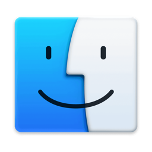

Mac OS 9 (authentic)
Apple · 2001 · the desktop as it was, without a dock
Classic Mac OS had no dock. Programs were opened from the Finder, running ones were switched through the Application menu at the right end of the menu bar, and the Control Strip along the bottom-left edge held system settings, not programs: AppleTalk, File Sharing, colour depth, monitor resolution, sound volume, the battery, video mirroring.
This theme keeps to that. The strip's modules drive the real thing where macOS still has one (volume, resolution, mirroring), show the rest, and the Application menu sits as far right as macOS lets a menu-bar item go. The desktop holds Macintosh HD, Applications and the Trash, and nothing else. The Platinum title bars and window frames are the same experiment as in the other Mac themes.
What made it special
- The Platinum appearance: pinstripes, WindowShade roll-up and proxy icons.
- Sherlock for searching files and the web.
- Extensions & Control Panels — endlessly tweakable, occasionally fragile.
- The multi-colour Apple logo in the top-left, the Application menu at the top-right.
- The Control Strip: a Platinum ledge of system modules that collapsed to a tab.
ⓘ Did you know…
A funeral for OS 9. At WWDC 2002 Steve Jobs held a mock funeral on stage, complete with a coffin, to tell developers it was time to move to Mac OS X.
“Mac OS 9 was a friend to us all. He worked tirelessly on our behalf.”
The bomb. With no protected memory, a crash often meant a dialog with a little bomb icon — and a restart.
Classic inside X. Early Mac OS X could boot the whole OS 9 system in a “Classic” compatibility environment.